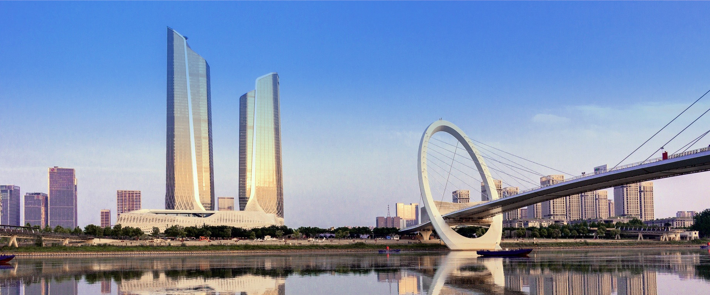

<!-- HTML结构 -->
<div id="slider">
  <div class="slide active" style="background: url(img/beijing.png) center bottom no-repeat">
<!--    -->
  </div>
  <div class="slide" style="background: url(img/download.png) center bottom no-repeat">
<!--    -->
  </div>
</div>

<!-- 按钮 -->
<button id="prev">Prev</button>
<button id="next">Next</button>

<!-- CSS样式 -->
<style>
  #slider {
    position: relative;
    width: 1200px;
    height: 720px;
    margin: 0 auto;
    overflow: hidden;
  }

  .slide {
    position: absolute;
    width: 100%;
    height: 600px;
  }

  .slide img {
    width: 100%;
    height: 100%;
  }
</style>

<!-- jQuery代码 -->
<script src="js/jquery.min.js"></script>
<script>
  $(document).ready(function() {
    // 定义变量
    var $slider = $('#slider');
    var $slide = $('.slide');
    var currentSlide = 1;

    // 初始化
    $slide.eq(currentSlide).addClass('active');

    // 点击按钮时切换幻灯片
    $('#prev').click(function() {
      $slide.eq(currentSlide).animate({left: '-100%'}, function() {
        $(this).removeClass('active').css('left', '100%');
      });
      currentSlide++;
      if (currentSlide >= $slide.length) {
        currentSlide = 0;
      }
      $slide.eq(currentSlide).css('left', '100%');
      $slide.eq(currentSlide).addClass('active').animate({left: 0});
    });

    $('#next').click(function() {
      $slide.eq(currentSlide).animate({left: '100%'}, function() {
        $(this).removeClass('active').css('left', '-100%');
      });
      currentSlide--;
      if (currentSlide < 0) {
        currentSlide = $slide.length - 1;
      }
      $slide.eq(currentSlide).css('left', '-100%');
      $slide.eq(currentSlide).addClass('active').animate({left: 0});
    });
  });
  </script>
